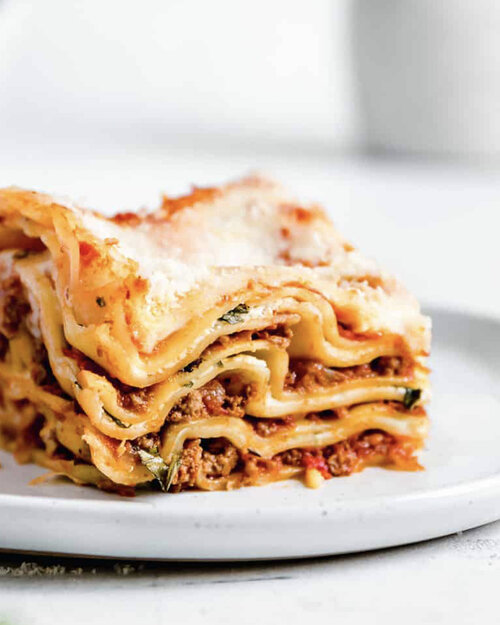

Lasagna Recipe

Deep Dish Meat Lasagna
This deep dish meat lasagna is perfection - not only is it layers of soft
noodles, hearty meat sauce and melted cheese, but it'a also a
crowd-pleasing comfort food that's both quick and easy to make.
Ingredients
Meat Sauce
- 2 lbs lean ground beef
- 1 (28oz/796ml) can diced tomatoes
- 1 cup tomato paste
- 3 tbsp packed brown sugar
- 1 tbsp chopped fresh basil
- 1 1/2 tsp kosher salt
- 1 tsp dried oregano
Cheese Filling
- 2 large eggs, lightly beaten
- 4 cups ricotta cheese
- 3/4 cup freshly grated Parmesan cheese
- 1 tbsp chopped fresh basil
- 1 tsp kosher salt
- 12 oven-ready lasagna noodles
- 3 cups shredded mozzarella cheese, divided in half
- 1/4 cup freshly grated Parmesan cheese, for topping
Steps
-
Preheat oven to 375°F. Coat a 13x9-inch baking dish with non-stick
cooking spray.
-
For the sauce, in a large skillet, brown beef over medium-high heat.
Drain and return to pan, adding diced tomatoes with their juice, tomato
paste, brown sugar, basil, salt and oregano. Bring to a boil and then
turn down to low, simmering for 30 minutes.
-
For the cheese filling, in a medium bowl, whisk eggs, ricotta, Parmesan,
basil and salt.
-
To assemble, spread 1 cup of meat sauce in the prepared dish. Top with 4
noodles, 1/2 of the ricotta mixture, 11/2 cups mozzarella and 1 cup meat
sauce. Top with 4 more noodles, remaining ricotta and remaining
mozzarella. Place 4 remaining noodles on top, cover with remaining meat
sauce and sprinkle with Parmesan cheese. Bake uncovered for 35 minutes.